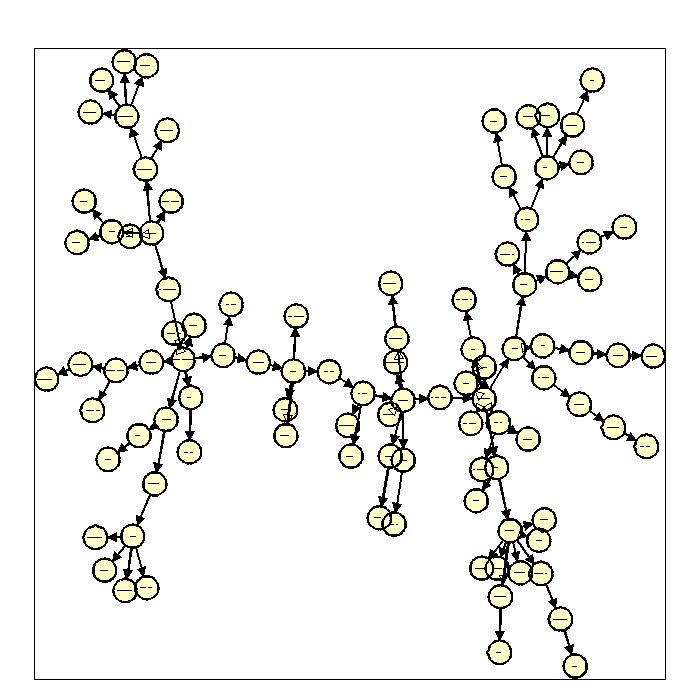
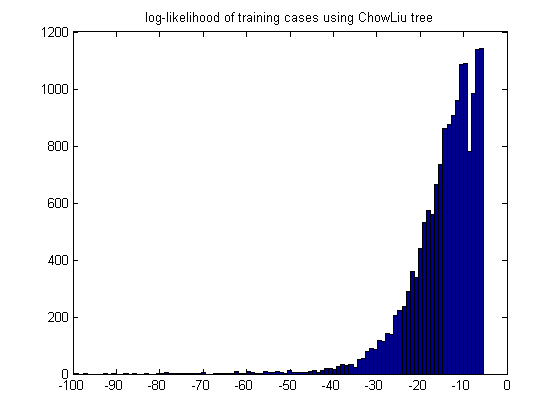

Find the MLE tree from a word-document binary matrix
load newsgroups
disp('mlapa chowliu demo')
model = treeFitStruct(X);
model = treeFitParams(model, X);
ll = treeLogprob(model, X);
if ~isOctave()
drawNetwork('-adjMat', model.G, '-nodeLabels', wordlist);
end
figure;hist(ll,100); title('log-likelihood of training cases using ChowLiu tree')
[junk, ndx] = sort(ll, 'descend');
chosen = [ndx(1:5)' ndx(end-2:end-1)'];
for i=1:length(chosen)
j = chosen(i);
fprintf('words in sentence %d with loglik %5.3f\n', j, ll(j));
wordlist(X(j,:))
end
mlapa chowliu demo
words in sentence 26 with loglik -5.323
ans =
'help'
words in sentence 44 with loglik -5.323
ans =
'help'
words in sentence 49 with loglik -5.323
ans =
'help'
words in sentence 105 with loglik -5.323
ans =
'help'
words in sentence 268 with loglik -5.323
ans =
'help'
words in sentence 638 with loglik -92.855
ans =
Columns 1 through 4
'aids' 'computer' 'course' 'data'
Columns 5 through 8
'display' 'dos' 'drive' 'email'
Columns 9 through 12
'files' 'format' 'ftp' 'graphics'
Columns 13 through 16
'help' 'human' 'image' 'israel'
Columns 17 through 21
'mac' 'nasa' 'number' 'pc' 'phone'
Columns 22 through 24
'power' 'president' 'program'
Columns 25 through 27
'research' 'satellite' 'science'
Columns 28 through 31
'server' 'shuttle' 'software' 'space'
Columns 32 through 34
'system' 'technology' 'university'
Columns 35 through 38
'version' 'video' 'windows' 'world'
words in sentence 13159 with loglik -97.077
ans =
Columns 1 through 4
'card' 'case' 'children' 'computer'
Columns 5 through 8
'dealer' 'disease' 'doctor' 'email'
Columns 9 through 12
'evidence' 'fact' 'files' 'ftp'
Columns 13 through 16
'government' 'gun' 'health' 'help'
Columns 17 through 21
'hit' 'human' 'image' 'jews' 'law'
Columns 22 through 25
'medicine' 'memory' 'number' 'phone'
Columns 26 through 28
'president' 'problem' 'program'
Columns 29 through 31
'question' 'research' 'rights'
Columns 32 through 35
'science' 'server' 'state' 'studies'
Columns 36 through 38
'system' 'technology' 'university'
Columns 39 through 42
'version' 'video' 'war' 'world'
 